كل وحدة من قائمتك: وش سوّيت، وصورها من التطبيق الحقيقي. كل شي جرّبته في التطبيق نفسه (index.html).
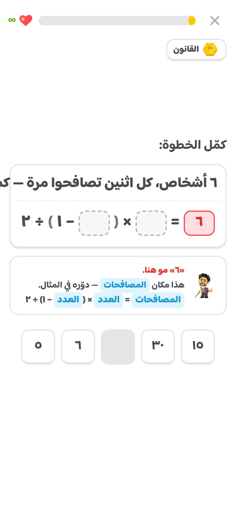
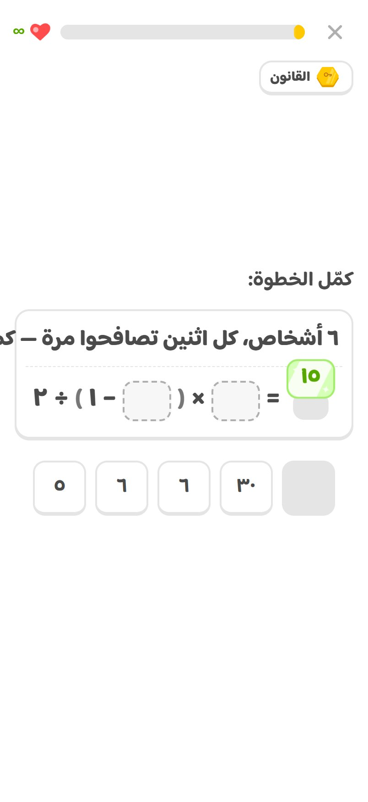
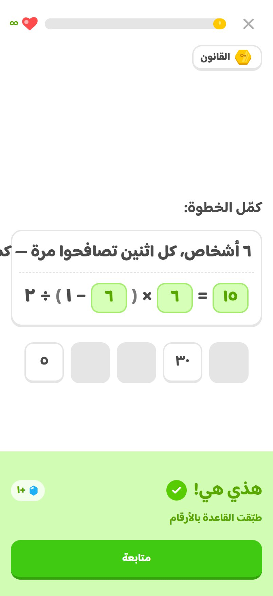
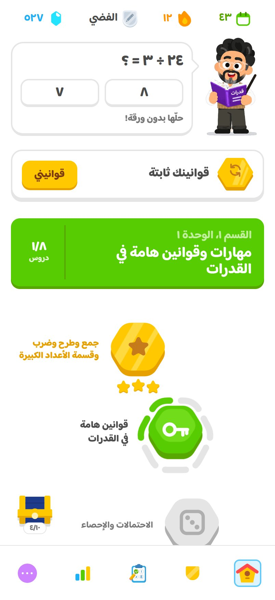
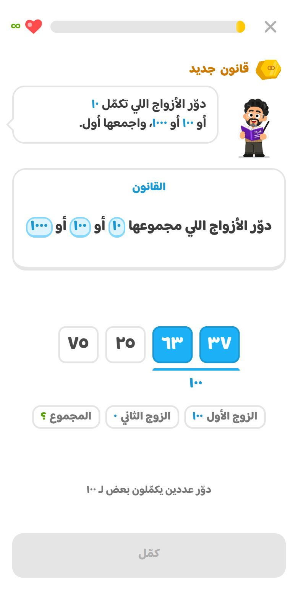
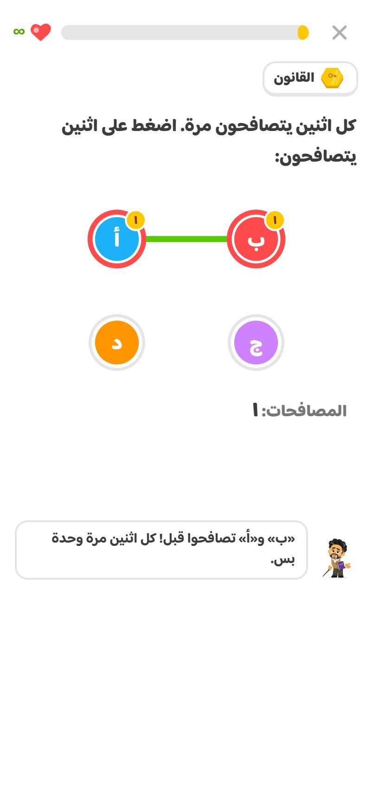
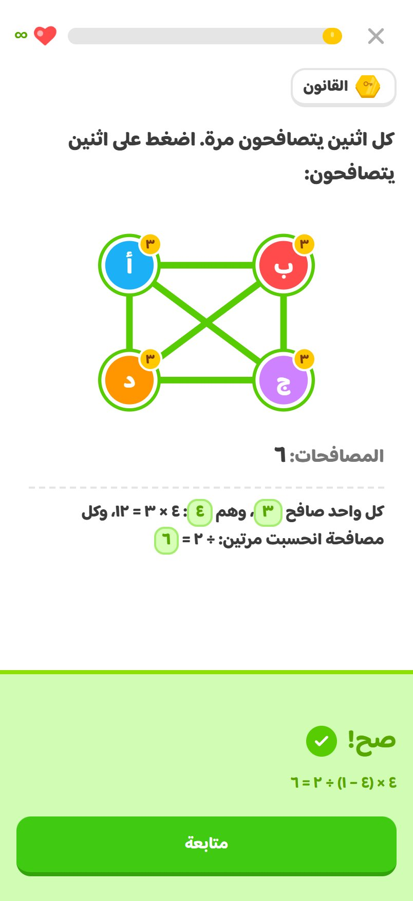
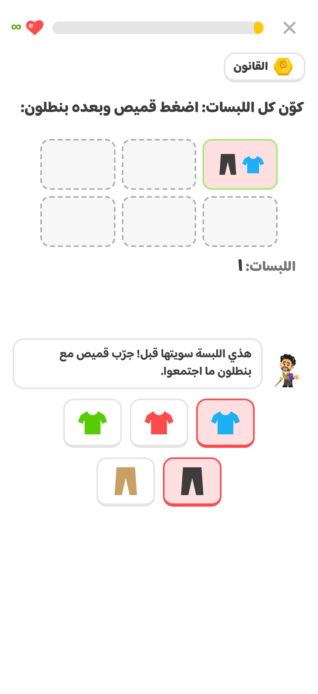
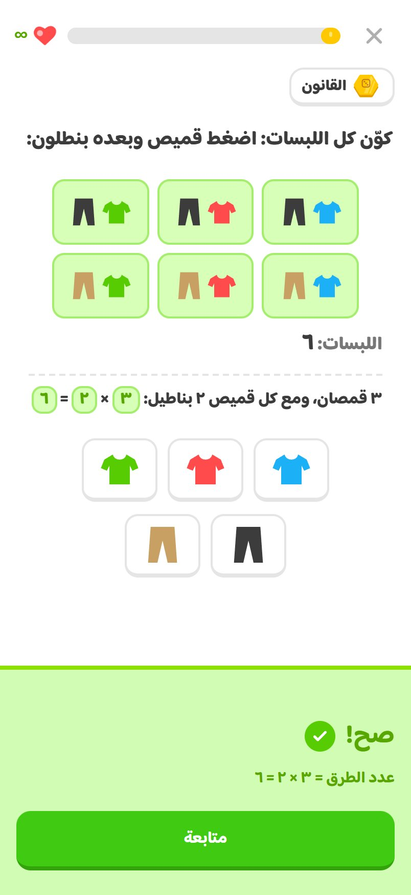
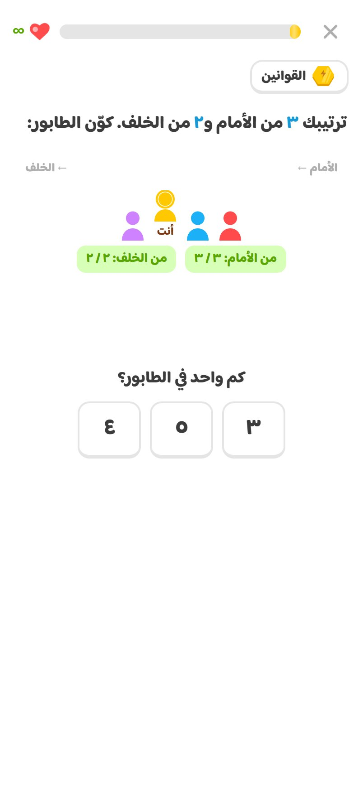
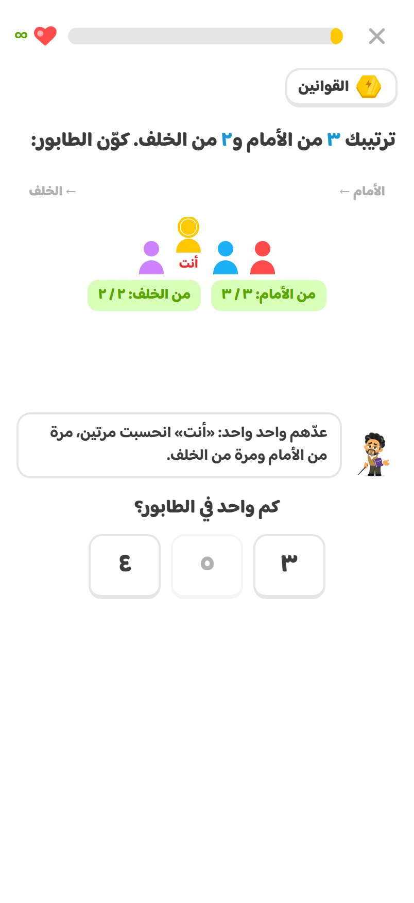
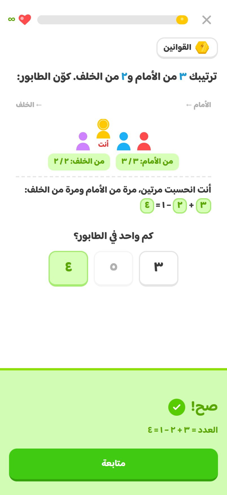
| الجوال | المقاس | النتيجة |
|---|---|---|
| iPhone 17 | ٤٠٢ × ٨٧٤ | كل الشاشات سليمة |
| iPhone 17 Pro Max | ٤٤٠ × ٩٥٦ | كل الشاشات سليمة |
| iPhone SE | ٣٧٥ × ٦٦٧ | سليمة بعد التصليح |
| جوال صغير | ٣٢٠ × ٥٦٨ | سليمة بعد التصليح |
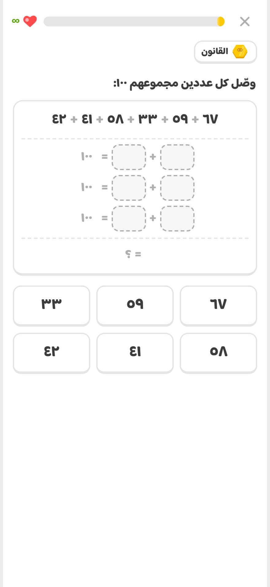
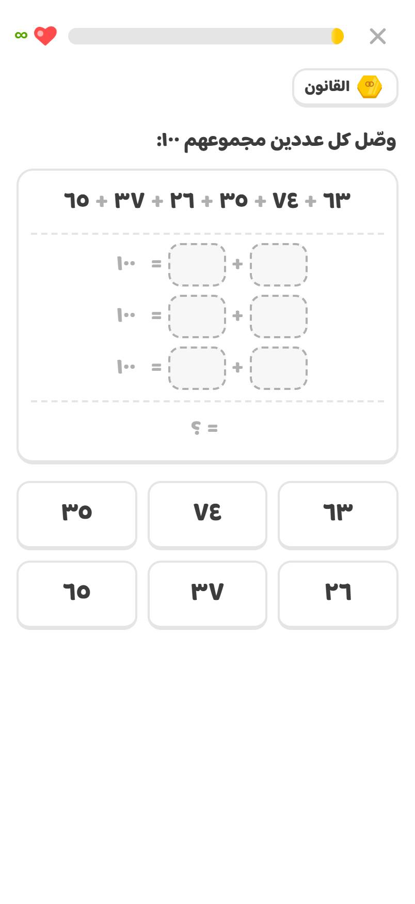
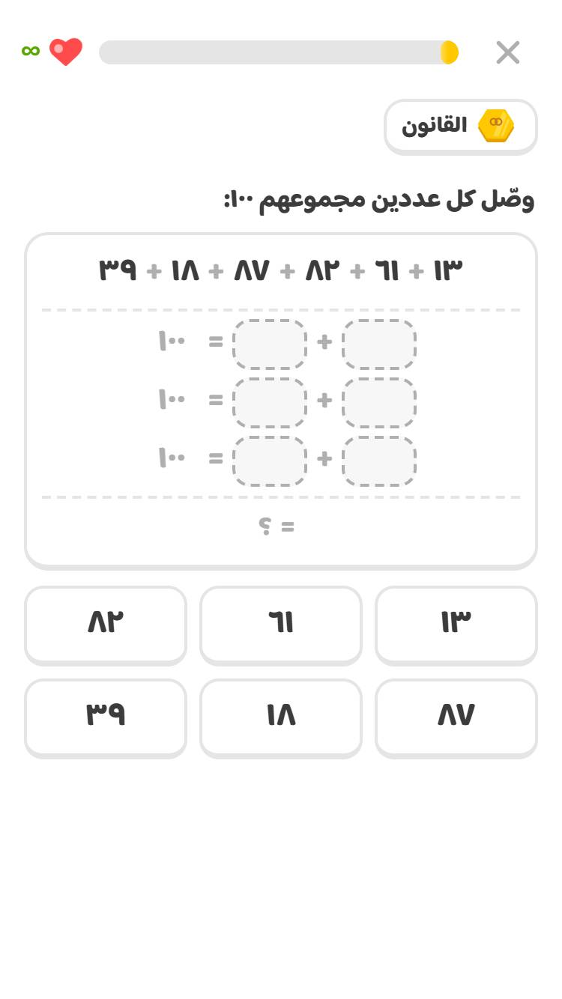
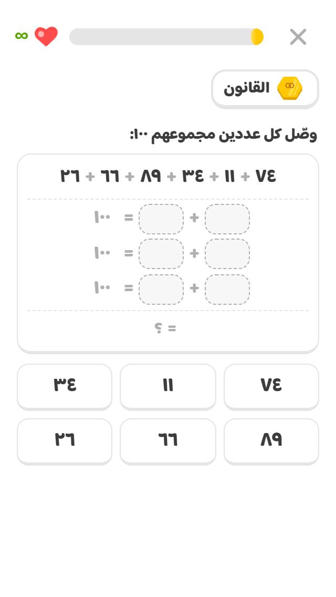